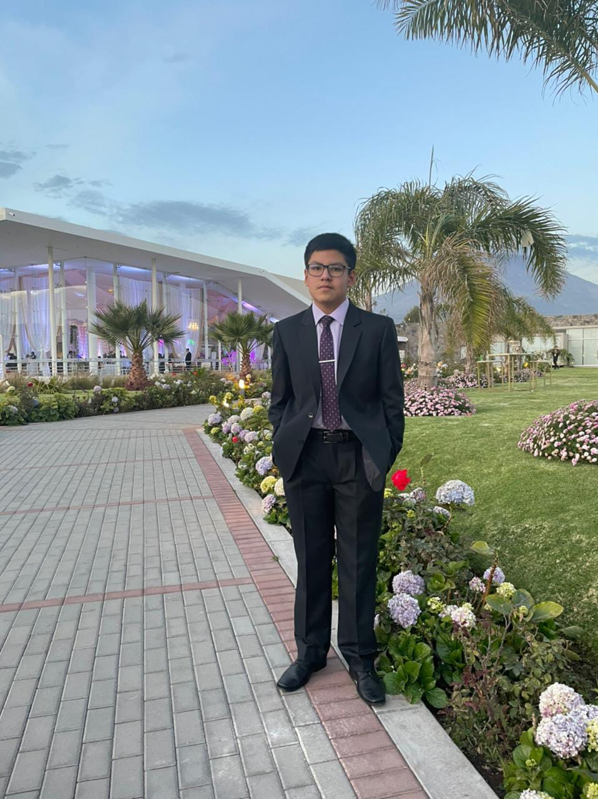

¿Quién soy?
Hola, mi nombre es Rodrigo Nelson Zeballos Bruna. Soy estudiante de la carrera de Ingeniería de Sistemas.
Soy un chico responsable, amable y sobre todo respetuoso
Me gusta ayudar a las personas cuanto sea posible

Hola, mi nombre es Rodrigo Nelson Zeballos Bruna. Soy estudiante de la carrera de Ingeniería de Sistemas.
Soy un chico responsable, amable y sobre todo respetuoso
Me gusta ayudar a las personas cuanto sea posible

En mi tiempo libre me gusta dedicarme a varias actividades: